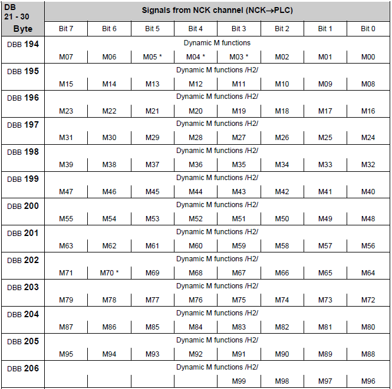
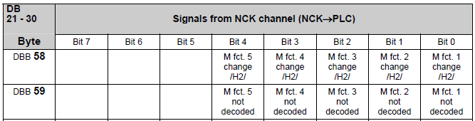

20.03.20; Mar.2020
Monitor 5
help
Area '840D Functions'

Monitor NC functions (NC to PLC):
- monitor and record all the M (Miscellaneous), S (Spindle Speed), T (Tool) functions, D (cutting edges for a tool) or H (as Integer or as Real) functions sent from a Part Program to PLC.
There are two windows so is possible to monitor simultaneous two types of functions (e.g. T and D functions) from the same Channel or from two different Channels of the NC.
M functions (NC to PLC):
M functions are commands, written in G Code, in the part program, but executed by the PLC.
Example: Start the cooling for the tool in main Spindle: the command is written in the part program (e.g. M07) but the valve for cooling liquid is controlled by PLC.
Using M functions is the most common way to transfer binary commands from NC to PLC.
Decoding M functions in the PLC:
With Sinumerik 840, there are 3 methods to decode the M functions in PLC.
1. Direct decoding (Quick M functions)
The most simple method to decode M functions is to use the direct decode signals from 'Channel DB' in PLC.
Each bit is set for a single PLC cycle.
Only first 99 functions are decoded.
The M function index is not decoded.
A small calculator for the bit and a monitoring function is available in 'Area 840' of Monitor5 program.

2. Decoding using a List of Functions (DB75, DB76)
Another method for decoding M function in PLC is using a List of Functions.
This method was very popular in the '90s but is rarely used now.
Precondition:
Must be activated in OB100, in FB1, DB7 call:
CALL FB 1, DB7
...
ListMDecGrp := ___ //number of decoded function groups, max. 16 groups
...
Hint for service: If in OB100, in FB1 call you see ListMDecGrp > 0 and DB75 and DB76 are present in the PLC, this method is used to decode M functions for this machine.
DB75 is created using a template from Sinumerik Toolbox.
The struncture is:
MSigGrp[1].MExtAdr INT //1st M function extension
MSigGrp[1].MFirstAdr DINT //numărul primei funcții M
MSigGrp[1].MLastAdr DINT //numărul ultimei funcții M
...
MSigGrp[n].MExtAdr INT //extensia functiei M
MSigGrp[n].MFirstAdr DINT //numărul primei funcții M
MSigGrp[n].MLastAdr DINT //numărul ultimei funcții M
Example:

In DB76 the bits will have the following meaning:
DBX0.0 M2 = 60
DBX0.1 M2 = 61
....
DBX0.7 M2 = 67
DBX1.0 M2 = 68
DBX1.1 M2 = 69
Bits in DB76 remain set. Their value must be reseted by the custom PLC program.
3. Scan the modified values
Another method for decoding M function in PLC is using a scan for 'modified' status of the functions.
This method is used also by Monitor5 program.
Into an NC block is possible to have a maximum of 5 calls for M functions.
Eack time a block with M fct. call is running in NC, the following bits are set, for a single PLC cycle, in Channel DB in the PLC.

...and the function value is written in:

'Monitor5' is scanning the bits in DB2n.DBX 58.0 ... 58.4
If DB2n.DBX58.0 = 1 => read M function number from DBD70 and M fct. extension from DBW68
If DB2n.DBX58.1 = 1 => read M function number from DBD76 and M fct. extension from DBW74
If DB2n.DBX58.2 = 1 => read M function number from DBD82 and M fct. extension from DBW80
If DB2n.DBX58.3 = 1 => read M function number from DBD88 and M fct. extension from DBW86
If DB2n.DBX58.4 = 1 => read M function number from DBD94 and M fct. extension from DBW92